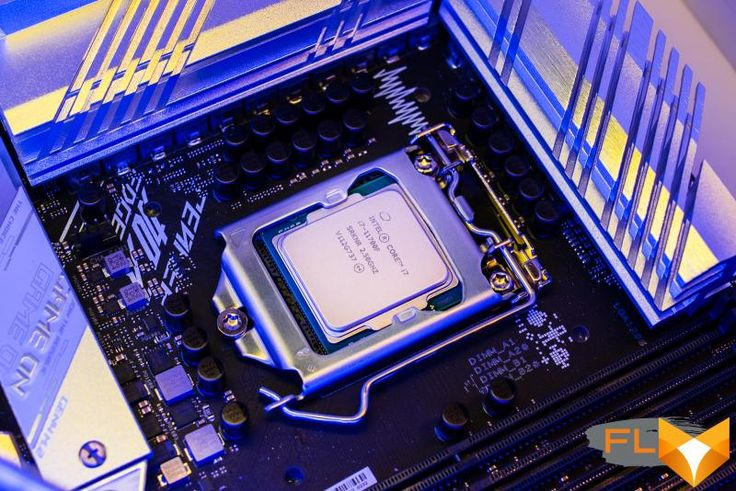

Placa Mãe
A placa-mãe nada mais é do que uma central de comunicação. Processador O processador é uma das principais peças de um dispositivo eletrônico inteligente, seja ele um PC, smartphone ou até mesmo um smartwatch. Disco Rígido O disco rígido — HD (Hard Disk) ou HDD (Hard Disk Drive) — é o dispositivo de armazenamento de dados mais utilizado nos computadores.
1. Placa Mãe
A placa-mãe nada mais é do que uma central de comunicação. É nela que são conectados todos os componentes do PC necessários para que uma máquina funcione. Os pentes de memória, a placa de vídeo, a fonte de energia, o processador, o HD, o SSD e as placas de rede, todos têm o seu lugar definido para se conectarem à placa- mãe.
2. Processador
O processador é uma das principais peças de um dispositivo eletrônico inteligente, seja ele um PC, smartphone ou até mesmo um smartwatch. Ele é responsável por processar praticamente todos os comandos e operações realizados no computador, atuando desde o controle da memória RAM até a abertura e execução de um programa, se comunicando com as demais peças da máquina por meio da placa-mãe e seus vários barramentos.
3. Disco Rígido
O disco rígido — HD (Hard Disk) ou HDD (Hard Disk Drive) — é o dispositivo de armazenamento de dados mais utilizado nos computadores. Esse tipo de equipamento guarda desde os seus arquivos pessoais até informações utilizadas exclusivamente pelo sistema operacional.
1. SGBD
2. MER
1. SGBD – Sistema Gerenciador de Banco de Dados
Um Sistema de Gerenciamento de Banco de Dados (SGBD) – do inglês Data Base Management System (DBMS) – é o conjunto de programas de computador (softwares) responsáveis pelo gerenciamento de uma base de dados. Seu principal objetivo é retirar da aplicação cliente a responsabilidade de gerenciar o acesso, a manipulação e a organização dos dados. O SGBD disponibiliza uma interface para que seus clientes possam incluir, alterar ou consultar dados previamente armazenados. Em bancos de dados relacionais a interface é constituída pelas APIs (Application Programming Interface) ou drivers do SGBD, que executam comandos na linguagem SQL (Structured Query Language).
2. MER – Modelo Entidade Relacionamento
O MER (Modelo Entidade Relacionamento) é utilizado para descrever os objetos do mundo real através de entidades, com suas propriedades que são os atributos e os seus relacionamentos.
Erick do Nascimento Pires